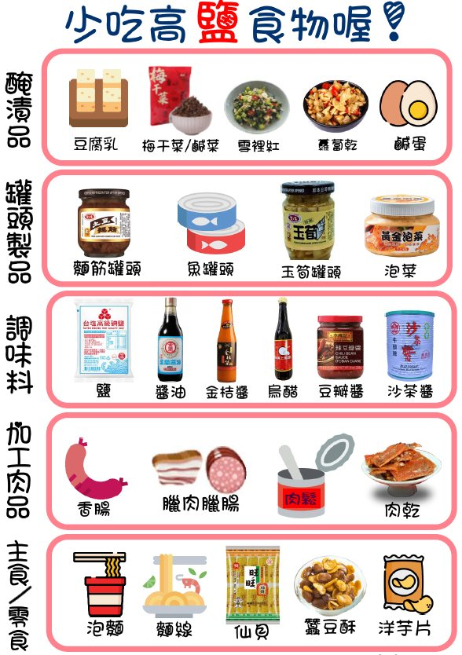

飲食與水分控制
低鈉飲食原則
鈉離子在人體中主要負責調控體內水分的平衡。攝取過多的「鈉」會使身體水分滯留，造成高血壓、肺積水，並增加心臟的負荷。鈉藏在哪裡？鈉廣泛存在於食物中，是醬油、味精、蕃茄醬、豆瓣醬、味噌、咖哩、干貝醬等調味料的主要成分之一。
每日限鹽建議
建議心衰竭患者每日限鹽 3 公克（1200 毫克鈉）至 5 公克（2000 毫克鈉），依病況調整；嚴重水腫時可能需限鹽低於 3 公克（1200 毫克鈉）。

低鈉食物選擇與烹飪技巧
- 選擇天然食材，以新鮮食物本身的原味為主；避免加工、罐頭及醃製、滷製食品。烹調時調味料用量逐漸減少，至少減為原本的一半。
- 忌高鈉加工食品，如：醃漬物、泡麵、麵線、蘇打餅乾、蜜餞、香腸等。
- 善用天然辛香料提味，如：薑、蔥、蒜、五香、八角、肉桂、花椒、芹菜、香菜、迷迭香、九層塔、檸檬、百香果、鳳梨等。
- 減少高鈉調味料，如：鹽、醬油、味精、味噌、咖哩塊、蕃茄醬、豆瓣醬、辣椒醬、XO 醬、烏醋等。
- 市售「低鈉鹽、健康美味醬」多以「鉀」取代「鈉」，心衰竭合併腎功能不良者不宜選用。臨床小提醒合併腎功能不全者使用低鈉（高鉀）鹽，可能造成高血鉀，務必先與醫療團隊確認。
- 購買前仔細閱讀包裝食品上標示的「鈉」含量，選擇鈉含量低的食品。
水分控制
體內過多的水分易增加心臟負荷，可能出現水腫或呼吸急促等症狀，因此請遵循醫囑控制每日水分攝取。當身體出現水分累積（水腫、體重迅速增加、呼吸急促）時，更需嚴格控制「鹽」與「水分」的攝取量。
水分控制技巧
- 每日起床排尿後、用餐前，用固定的同一台體重計量測體重，並逐日記錄。
- 秤量固體食物重量估算含水量：每日攝取固體食物重量 × 0.5 ＝ 飲食中攝取的水量。
- 將每日可飲用的水量平均分配於白天，避免一次大量飲水。
- 口渴時可含冰塊、漱口或以檸檬片刺激唾液分泌緩解。